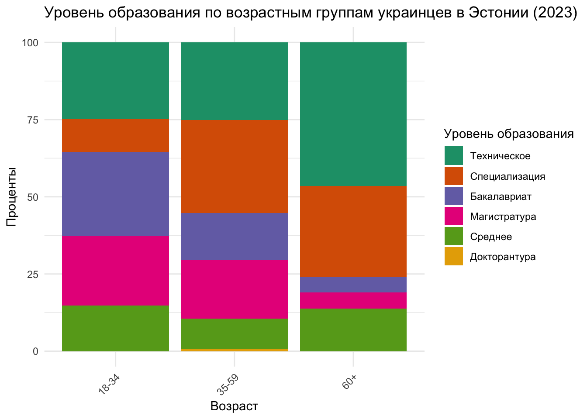
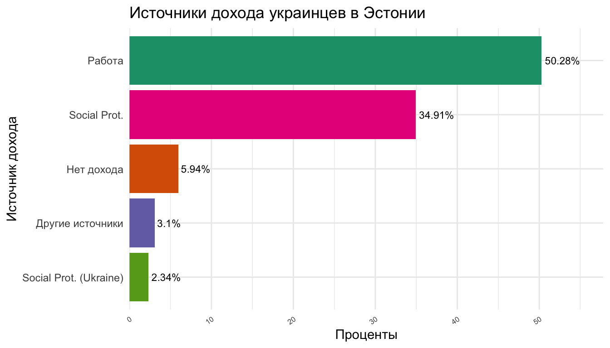

The inflow of more than 8 million Ukrainian refugees into Europe has introduced both challenges and opportunities for labour market outcomes. People fleeing the war in Ukraine are allowed to live and work in the European Union for up tp 3 years under the Temporary Protection Status. Although the education and qualification levels of Ukrainian refugees are generally high, difficulties such as lack of language skills, childcare services and credential recognition processes pose significant barriers to employment. Instances of ethnic discrimination in the labor market have been reported, highlighting additional challenges faced by Ukrainian refugees (Londar et al., 2024). According to Preut, expanding language courses, childcare services, and accelerating credential recognition can enhance employment likelihood (Preut, 2023).
Demographics
Across all countries, the 35–59 age group dominates the refugee population, highlighting a significant presence of individuals in their prime working years. The 18–34 group follows, while the 60+ demographic is least represented. Estonia stands out with a particularly high share of people aged 18-34, while balancing distribution between young and middle-aged adults.
Education
Educational attainment varies, but most refugees possess at least secondary education. In Estonia, nearly half of the respondents (49.46%) hold vocational or specialized training, followed by 38% with a Bachelor’s or Master’s degree. Across all countries, the proportion of individuals with a Bachelor’s degree hovers between 10–20%, while Master’s degrees are particularly common in Slovakia and Romania.

Although few hold PhDs, their presence is most visible in Slovakia. Notably, technical and vocational training is prevalent, suggesting that many refugees were skilled laborers—yet challenges remain in transferring those skills to host-country labor markets.
Employment and Economic Participation
Before displacement, employment rates among Ukrainian refugees were high (60–70%), regardless of host country. However, after resettlement, the picture changes dramatically. Employment drops while unemployment, housekeeping, and studying rise sharply - particularly in Romania, Slovakia, and Poland, where about one-third of refugees are now unemployed.

Several barriers explain this shift. Language emerges as a prominent obstacle, especially in Estonia (cited by ~37% of respondents). Meanwhile, Moldova and Slovakia report higher rates of respondents experiencing no employment difficulties. Other commonly cited barriers include “Not looking for work” and insufficient opportunities, suggesting both personal and structural factors at play.

Income Sources
Employment in the host country is the leading source of income across the board, especially in Estonia, Czechia, and Slovakia - where it exceeds 40–50%. Romania is an outlier, showing an even distribution among host-country jobs and alternative sources. Poland sees higher-than-average reliance on remittances.

Still, income insecurity remains a concern. Romania reports the highest number of refugees with no income, and in all countries, “No income” and “No answer” responses, though generally low, suggest hidden economic vulnerability.
Aid and Social Protection
Cash benefits are the most widespread form of aid, reaching nearly 90% of respondents in countries like Czechia, Moldova, and Romania. Poland differs drastically: over 80% of respondents there receive family grants instead. Estonia presents a more diverse profile, with both cash and unemployment grants being common.

Despite variations, the data underscores the central role of direct financial assistance in refugee support systems. However, the limited role of unemployment or disability benefits raises concerns about longer-term inclusion in formal welfare systems.
Estonia graphs for popular article
# Filter & recode activities in Estonia
act_host_data <- combined_data |>
filter(
country == "Estonia",
!is.na(host_country_work_coa)
)
# Count and calculate percentage
act_host_summary <- act_host_data |>
count(host_country_work_coa, name = "n_host") |>
mutate(percent_host = round(n_host / sum(n_host) * 100, 1))
# Filter & recode activities in Ukraine
act_ukr_data <- combined_data |>
filter(
country == "Estonia",
!is.na(demographics_resp_activity),
demographics_resp_activity != "No Answer"
)
# Count and calculate percentage
act_ukr_summary <- act_ukr_data |>
count(demographics_resp_activity, name = "n_ukr") |>
mutate(percent_ukr = round(n_ukr / sum(n_ukr) * 100, 1))
# Merge summaries for comparison
activity_comparison <- full_join(
act_ukr_summary,
act_host_summary,
by = c("demographics_resp_activity" = "host_country_work_coa")
)
activity_comparison demographics_resp_activity n_ukr percent_ukr n_host percent_host
1 Employed 365 65.6 296 53.2
2 Housekeeping 51 9.2 26 4.7
3 Other 17 3.1 18 3.2
4 Retired 46 8.3 37 6.7
5 Studying 48 8.6 45 8.1
6 Unemployed 29 5.2 133 23.9
7 Trainee NA NA 1 0.2Warning: There was 1 warning in `mutate()`.
ℹ In argument: `host_country_work_coa = fct_recode(...)`.
Caused by warning:
! Unknown levels in `f`: Long term illness/injuryWarning in get_plot_component(plot, "guide-box"): Multiple components found;
returning the first one. To return all, use `return_all = TRUE`.
combined_data |>
filter(
country == "Estonia",
!is.na(demographics_educ_level),
!is.na(introduction_resp_age)
) |>
mutate(demographics_educ_level = case_when(
grepl("tech", demographics_educ_level, ignore.case = TRUE) ~ "Техническое",
grepl("sec", demographics_educ_level, ignore.case = TRUE) ~ "Среднее",
grepl("pri", demographics_educ_level, ignore.case = TRUE) ~ "Начальное",
grepl("phd", demographics_educ_level, ignore.case = TRUE) ~ "Докторантура",
grepl("master", demographics_educ_level, ignore.case = TRUE) ~ "Магистратура",
grepl("bachelor", demographics_educ_level, ignore.case = TRUE) ~ "Бакалавриат",
grepl("no_edu", demographics_educ_level, ignore.case = TRUE) ~ "Без образования",
grepl("prefer", demographics_educ_level, ignore.case = TRUE) ~ "Без ответа",
grepl("spec", demographics_educ_level, ignore.case = TRUE) ~ "Специализация",
TRUE ~ demographics_educ_level
)) |>
filter(demographics_educ_level != "Без ответа") |>
count(introduction_resp_age, demographics_educ_level) |>
group_by(introduction_resp_age) |>
mutate(prop = n / sum(n) * 100) |>
ungroup() |>
mutate(demographics_educ_level = fct_reorder(demographics_educ_level, n, .fun = sum, .desc = TRUE)) |>
ggplot(aes(x = introduction_resp_age, y = prop, fill = demographics_educ_level)) +
geom_col(position = "stack") +
xlab("Возраст") +
ylab("Проценты") +
theme_minimal() +
theme(axis.text.x = element_text(angle = 45, hjust = 1)) +
guides(fill = guide_legend(title = "Уровень образования")) +
scale_fill_brewer(palette = "Dark2") +
ggtitle("Уровень образования по возрастным группам украинцев в Эстонии (2023)")

# Function to create a clean proportion table
make_prop_table <- function(variable, na.rm = FALSE) {
if (na.rm) {
variable <- variable[!is.na(variable)]
}
tab <- table(variable)
tibble::tibble(
Category = names(tab),
Count = as.numeric(tab),
Percent = round(100 * prop.table(tab), 2)
)
}
rus_labels <- c(
"dont_know" = "Затрудняюсь ответить",
"fewer" = "Меньше, чем до войны",
"more" = "Больше, чем до войны",
"prefer_not_to_answer" = "Предпочитаю не отвечать",
"same" = "Примерно столько же"
)
# Generate and format table
make_prop_table(data_ee$economic_capicity_L13_SS_AFF_GOODS, na.rm = TRUE) |>
mutate(Category = rus_labels[Category]) |>
kable(booktabs = TRUE, align = "c",
col.names = c("Ответ", "Количество", "Процент"))|>
kable_styling(latex_options = c("striped"), font_size = 12) |>
column_spec(1, bold = TRUE) |>
row_spec(0, bold = TRUE, color = "white", background = "gray") |>
add_header_above(c("Способность приобретать товары по сравнению с довоенным временем" = 3))| Ответ | Количество | Процент |
|---|---|---|
| Затрудняюсь ответить | 16 | 3.57 |
| Меньше, чем до войны | 73 | 16.29 |
| Больше, чем до войны | 160 | 35.71 |
| Предпочитаю не отвечать | 1 | 0.22 |
| Примерно столько же | 198 | 44.20 |
make_prop_table(data_ee$economic_capicity_L13_1_SM_MORE_GOODS)# A tibble: 14 × 3
Category Count Percent
<chr> <dbl> <table[1d]>
1 financial_assistance 4 2.50
2 more_hours 35 21.88
3 more_hours new_job 2 1.25
4 new_job 85 53.12
5 new_job more_hours 12 7.50
6 new_job other 2 1.25
7 new_job sharing_expenses financial_assistance 1 0.62
8 other 9 5.62
9 other new_job 1 0.62
10 other sharing_expenses 1 0.62
11 reduced_expenses 5 3.12
12 reduced_expenses other 1 0.62
13 remittances 1 0.62
14 remittances new_job 1 0.62 make_prop_table(data_ee$economic_capicity_L13_1_SM_LESS_GOODS)# A tibble: 24 × 3
Category Count Percent
<chr> <dbl> <table>
1 difficulty_finding_work 2 2.74
2 difficulty_finding_work housing_education_expenses 4 5.48
3 difficulty_finding_work increased_expenses 2 2.74
4 difficulty_finding_work increased_expenses housing_education_e… 1 1.37
5 difficulty_finding_work reduced_income 1 1.37
6 housing_education_expenses 10 13.70
7 housing_education_expenses no_financial_assistance 1 1.37
8 housing_education_expenses other 7 9.59
9 increased_debt 1 1.37
10 increased_expenses 6 8.22
# ℹ 14 more rows